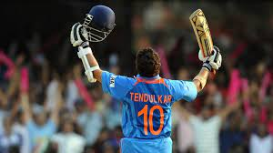

Sachin Tendulkar

Summary
He is referred to as 'God of Cricket'
Education
- He learnt cricket from his teacher - Ramakant Achrekar
- He learnt modesty and good manners from his family
- He learnt to stay present from his Guru - Satya Saibaba
Work Experience
- Represented India at the international level in Tests, ODIs and T20s
- Represented Mumbai at the Ranji level
- Represented Mumbai Indians in IPL
- Represented Rest of the World teams in MCC events
Skills
- Best Batsman in the World
- Handy Spin Bowler who can bowl Leg Spin, Off Spin and Mystery Balls
- Exceptional Fielder at his time which a fantastic throwing arm
Achievements
- Conferred Bharat Ratna - Highest Civilian Award in India
- Long cricketing career spanning more than 2 decades
- Part of World Cup Winning Team
- First person to 200 in ODIs
- Max number of Test Centuries in the world
- Captained India in various formats
- Never involved in any controversies
Learn More about Sachin Tendulkar